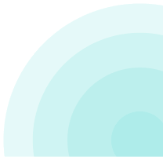
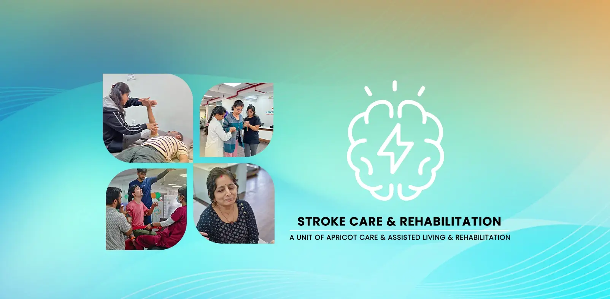

Expert Stroke Rehabilitation & Recovery in Pune | Apricot Care


Comprehensive Rehabilitation for Stroke Recovery in Pune
A stroke is a medical emergency that changes life in a split second. Once the hospital stabilizes the patient, the most important phase begins: getting back to a normal life. At Apricot Care Assisted Living and Rehabilitation, we provide a specialized environment in Pune dedicated entirely to rehabilitation for stroke recovery.
We don't just offer a place to stay; we offer a medical pathway to help you or your loved one regain the ability to walk, speak, and live independently.
Why the First 90 Days are the "Golden Period"
In the medical world, we know that the brain is most "flexible" immediately after a stroke. We call the first three months the "Golden Period." During this time, the brain is working hard to repair itself through a process called Neuroplasticity.
- Higher Recovery Potential: Clinical data show that patients who start intensive rehabilitation for stroke recovery within this 90-day window have a much better chance of returning to their daily routines.
- 75% Success Rate: At our Pune center, 3 out of 4 patients who begin therapy in this window regain independent movement or walking ability within six months.
- Don't Wait: Every day you wait is a day of lost recovery. Starting rehab early "teaches" the brain to find new ways to control the body before muscles begin to weaken.
What is a Stroke and Why is Specialized Care Critical?
A stroke, often called a "brain attack", happens when the blood supply to part of the brain is cut off. Without oxygen, brain cells begin to die within minutes. This can lead to a sudden loss of movement, speech, or memory.
At Apricot Care, we categorize strokes into three main types to tailor our rehabilitation for stroke recovery:
Ischemic Stroke (The Blockage)
The most common type, caused by a blood clot blocking an artery. Our rehab focuses on retraining the brain to work around areas deprived of oxygen.
Hemorrhagic Stroke (The Bleed)
Occurs when a weakened blood vessel bursts and bleeds into the brain. Often requires longer recovery times and careful monitoring to manage brain pressure.
TIA or "Mini-Stroke"
A Transient Ischemic Attack is a temporary blockage. Symptoms may go quickly, but it's a serious warning sign. Our program prioritizes lifestyle changes and prevention for your safety.
Common Challenges After a Stroke
The effects of a stroke depend on which part of the brain was hurt. Most families contact our Pune center because they are struggling with one or more of the following:
- Hemiplegia or Hemiparesis: This is paralysis or weakness on one side of the body. It makes simple things like standing up or holding a spoon nearly impossible.
- Aphasia: Difficulty speaking, finding the right words, or understanding what others are saying.
- Dysphagia: Trouble swallowing safely, which can lead to choking or lung infections.
- Loss of ADLs: A stroke often takes away the ability to perform "Activities of Daily Living" (ADLs)—the basic tasks like bathing, dressing, and grooming that give a person their dignity.
Our 4-Pillar Rehabilitation Roadmap
We don't believe in "generalized" exercise. Our Pune team follows a multi-disciplinary approach
where every therapist speaks to the other daily.
Recovering from these challenges requires more than just general medicine. It requires a team that
works together. Because we are an Assisted Living and Rehabilitation center, we
provide 24/7 care.
This means that if a patient struggles with balance in the middle of the night, a trained nurse is
there to help, ensuring that the recovery process never stops and the patient remains safe from
falls.
A Holistic Ecosystem for Recovery
We believe that true rehabilitation for stroke recovery cannot happen in silos. If a patient only gets physical exercise but struggles to swallow or feels depressed, their overall recovery will stall. At Apricot Care, we integrate four essential pillars of therapy into one personalized roadmap.
- The Bobath Concept: We help patients regain natural movement by focusing on posture and control.
- PNF (Proprioceptive Neuromuscular Facilitation): Using specific movement patterns to "wake up" muscles that have been inactive since the stroke.
- Gait Training: We use specialized equipment to help survivors safely relearn how to balance, stand, and walk again.
Unlike standard physiotherapy for back pain, Neuro-Physiotherapy focuses on the brain-body connection. Our Pune specialists use evidence-based techniques to "remap" the brain.
- Self-Care Training: Relearning how to button a shirt, brush teeth, or use a spoon.
- Home Safety: Training you to move safely in a home environment to prevent falls.
- Adaptive Tools: Introducing simple gadgets (like reachers or modified cutlery) that make daily tasks possible even with limited movement.
The goal of Occupational Therapy (OT) is simple: helping you get back to your "occupations" of daily life. Our therapists focus on fine motor skills and Activities of Daily Living (ADLs).
- Strengthen Facial Muscles: Exercises to improve speech clarity and prevent slurring.
- Swallowing Safety: Vital training to ensure the patient can eat and drink without the risk of choking or lung infections.
- Communication Tools: Using apps or boards to help those who cannot yet speak express their needs to their family.
Many stroke survivors face Aphasia (difficulty speaking) or Dysphagia (difficulty swallowing). Our speech-language pathologists work to address these challenges with a combination of exercises and communication aids.
- Cognitive Exercises: Puzzles and memory tasks to sharpen focus and problem-solving skills.
- Counseling: Helping both the survivor and their family manage the anxiety, frustration, and depression that often follow a stroke.
- Motivation: Building the mental resilience needed to keep showing up for therapy every single day.
The emotional toll of a stroke is heavy. We provide a supportive environment that addresses the "hidden" side of recovery.
.jpg)
Why a Residential Rehab Center is Often Better Than Home Care
When a loved one is discharged from the hospital, the first instinct for many families is to
take
them home. However, providing rehabilitation for stroke recovery at home often presents hidden
challenges that can slow down progress.
At Apricot Care, we provide a "Bridge of Care" that combines medical
supervision
with a home-like atmosphere. Here is why families choose our Pune center over traditional
home-based
physiotherapy:
Dr. Amol Kathar
M.PT Neurosciences
Physiotherapist
Our Team Of Experts
Meet Your Pune Rehabilitation Team
Choosing a rehab partner is choosing a team of people you can trust. At Apricot Care Assisted Living and Rehabilitation, our team is our greatest strength. We are not just providers; we are partners, coaches, and dedicated supporters on your journey.